Você pediu três coisas: que todas as notas selecionadas saiam e entrem de verdade, que dê para escolher wikis, livros e mesas inteiros em vez de marcar nota por nota, e uma revisão das telas no celular, a começar pela Agenda. Achei a causa de cada problema, fiz uma varredura de 15 telas no celular e dividi o trabalho em sete PRs.
O pacote é montado inteiro na memória e tem teto fixo: 128 MB no desktop e 64 MB no Android, compactado. PNG quase não comprime, então uma wiki com muitas imagens bate no teto.
Cofre inteiro: 562 MB (1.051 arquivos). Wiki Cronos com as imagens que usa: ~253 MB. Dois .kra da Galeria têm 58 MB cada e passam do limite por arquivo (50 MB), o que derruba o “Cofre inteiro” logo no começo.
Fonte: du/stat em 13/11; limites em core/transfer/archive.ts:5 e TransferWorkspace.tsx:62.
Não rodei a exportação no app; concluí pelo código e pelos tamanhos. A Cronos recém-importada do Discord não sai por nenhum caminho da tela atual.
Em “Levar para outro aparelho”, a aba Por itens abre primeiro: cada wiki, livro e mesa do cofre, com o tamanho já somando os anexos. Marque e salve. Vale também para o ZIP do Obsidian e para gerar documento.
Anexos/.A maquete é clicável. Os números são do seu cofre (tamanho das pastas em 13/11; a tela real soma também os anexos de livros e campanhas).
A aba Por notas troca a lista plana de caminhos (100 por vez) por uma árvore de pastas. Marcar uma pasta marca tudo dentro; a caixa fica “parcial” quando só parte está marcada.
Depois de salvar: ✓ Todas as 78 notas escolhidas e as 61 imagens que elas usam estão no pacote.
Ao abrir um pacote, a prévia mostra os itens que vieram, não 466 caminhos. Cada item diz se é novo ou se já existe, e tem a sua própria ação.
Cada módulo ganha um “Exportar…” que abre Importar / Exportar com o item já marcado: wiki, livro, mesa, campanha e pasta das Notas.
U55, se você aprovar: seleção múltipla na barra das Notas (Ctrl ou Shift + clique; no celular, “Selecionar” e toque) com “Exportar seleção…”.
Reproduzi as suas duas capturas no navegador a 420 × 860 px e medi cada parte. O desktop não muda; tudo abaixo vale até 640–700 px de largura.
Alturas pelo navegador, com o cofre de exemplo. Causas: agenda.css:82 (visões em linha própria), views.tsx:154 (os 4 primeiros eventos do dia), agenda.css:87 (folga de 72 px em toda visão).
Escala: 1 px na régua = 2 px na tela.
Suas tarefas diárias usam 🏁 keep: cada dia concluído fica guardado na nota, que cresce. As criadas pela Agenda usam 🏁 delete. Posso pôr “Transformar em hábito” no ⋯ (pergunta 6).
15 telas a 360 × 780 px, tema escuro, com o cofre de exemplo do navegador. Capturas feitas pelo Chrome sem janela; medidas no navegador do app. As linhas vermelhas marcam onde o texto começa.
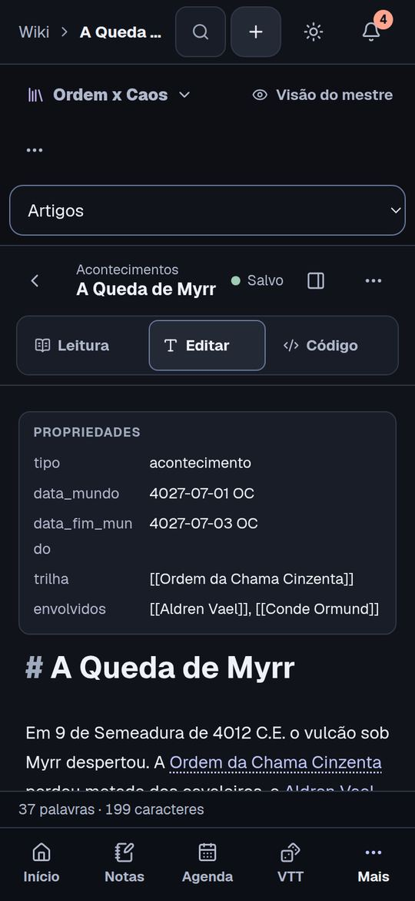
texto em 633 px[[links]] crus no lugar da ficha.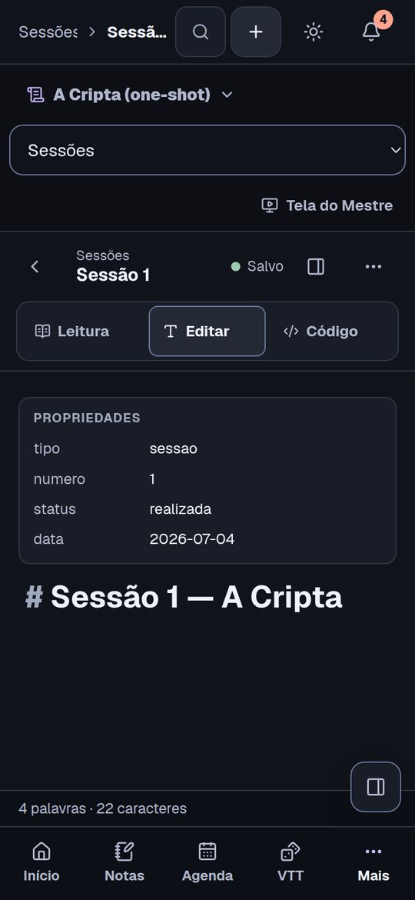
título em 517 px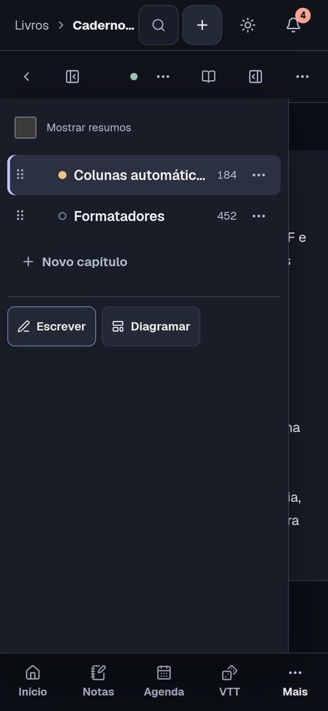
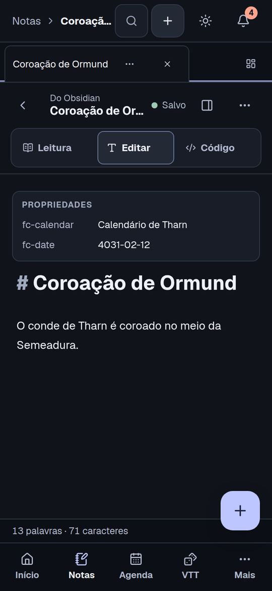
título em 372 px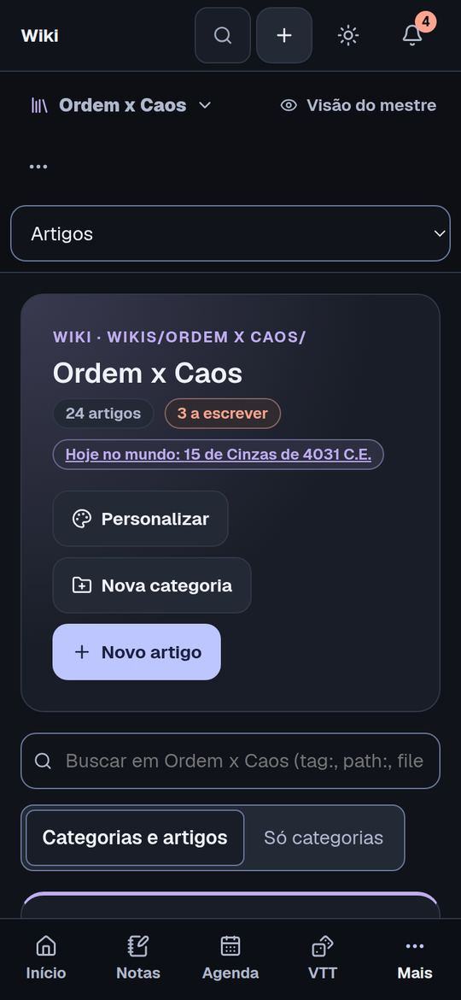
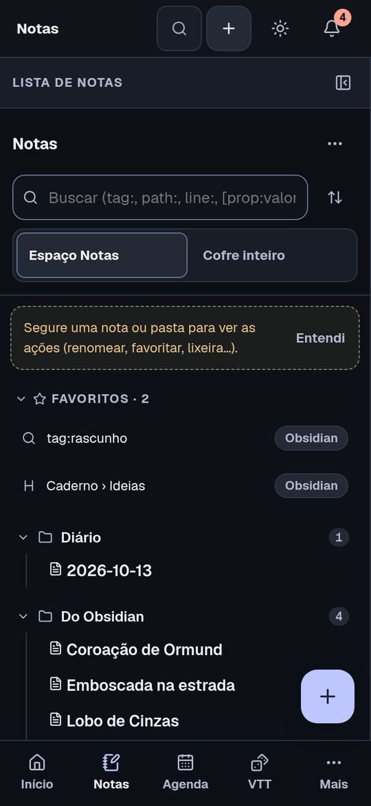
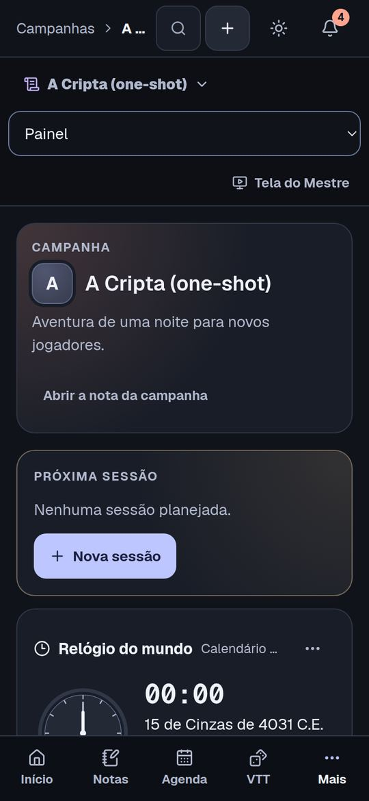
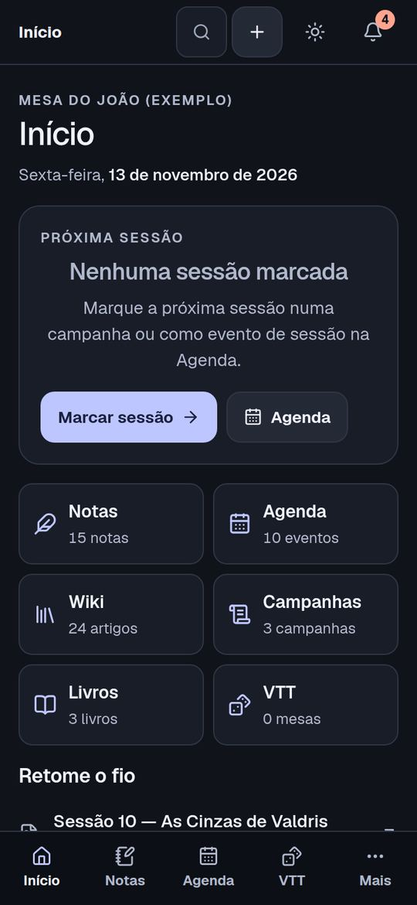
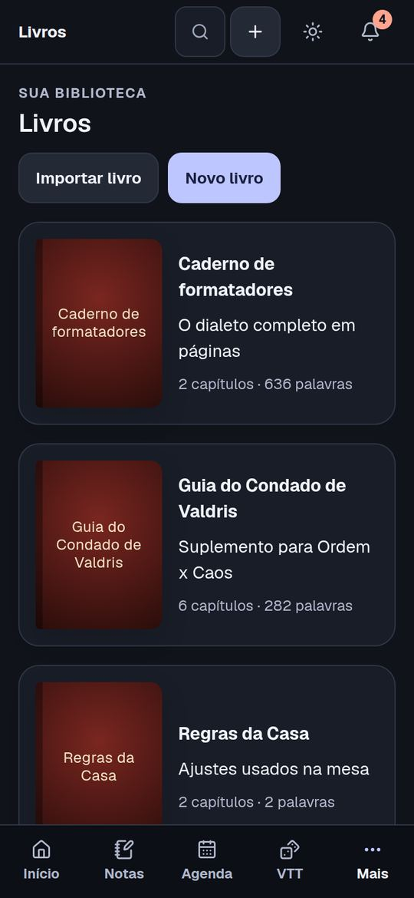
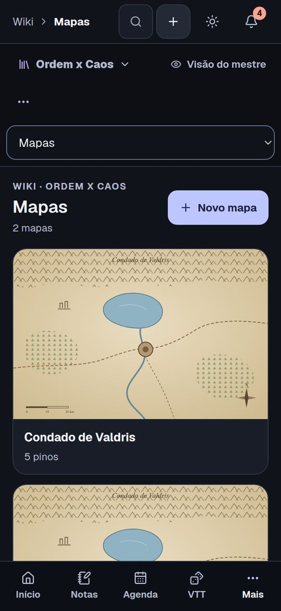
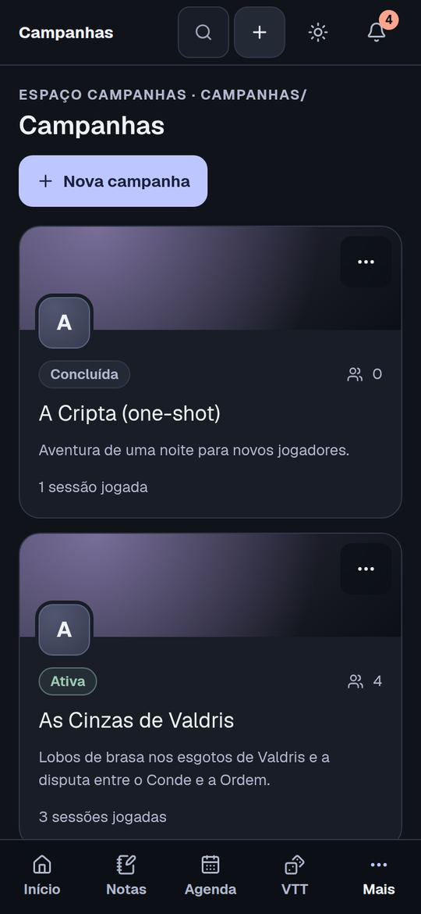
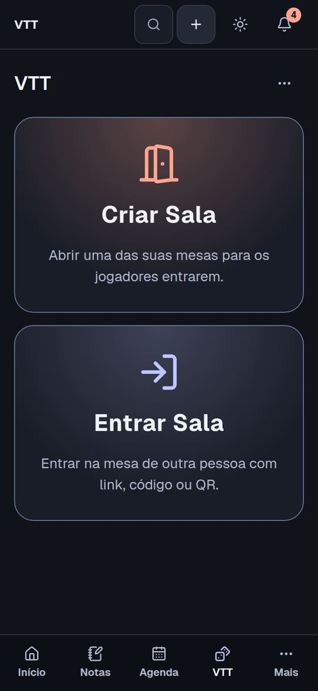
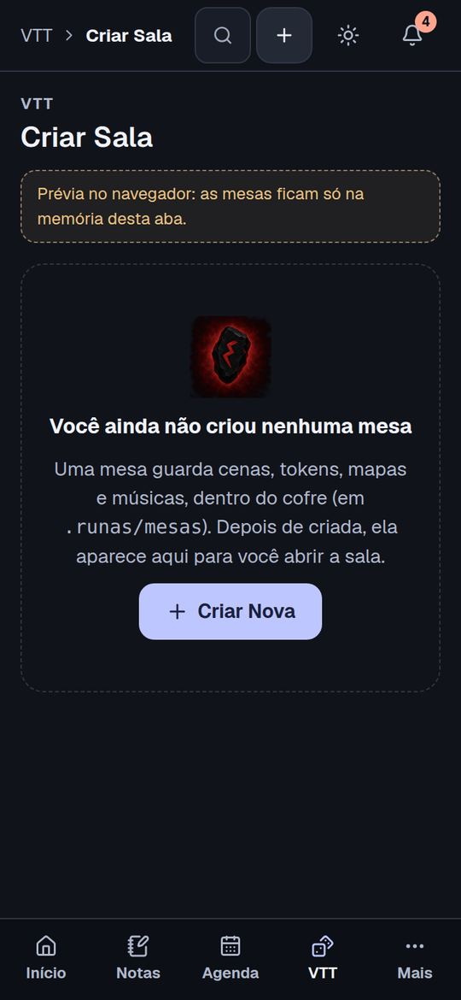
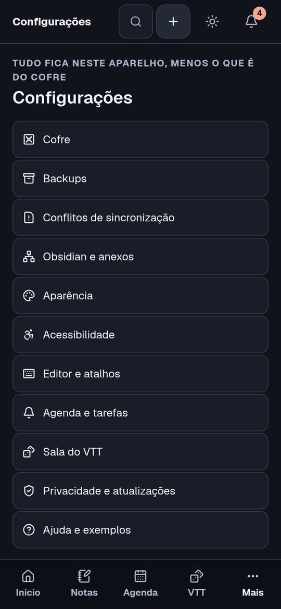
Início, Livros, Mapas, Campanhas, VTT, Criar sala e Configurações. Importar/Exportar será refeita nos PRs B e C.
Tema claro (o teste de contraste cobre as cores, não o desenho), o Android de verdade (teclado virtual sobre o editor, gestos), celular deitado e uma mesa aberta no VTT (o cofre de exemplo não tem mesa).
| PR | O que entrega | Depende de | Como confiro | Custo estimado |
|---|---|---|---|---|
| A | U50: pacotes em pedaços no desktop e no Android; importação em lotes com progresso; ADR 0037 | main | O leitor da 1.3 abre o pacote novo; smoke exporta e reimporta 300 MB no Electron e 120 MB no Android | 15–20% |
| B | U51 e U52: aba Por itens, árvore Por notas, resumo e conferência no fim | A | Testes do que entra em cada item; toda nota marcada está no manifesto; 320 px, teclado e leitor de tela | 10–14% |
| C | U53: prévia da importação por itens, ação por item, cópia com nome | B | Pacotes da 1.3 e da 1.4; cópia de wiki com links ajustados; falha no meio | 10–12% |
| D | U54 (e U55 se aprovado): atalhos nos módulos | B | Cada atalho abre a tela com o item marcado | 5–8% (+3%) |
| E | U56–U59: Agenda no celular (topo, mês, tarefas, botões de criar) | main (em paralelo com A–D) | Medidas a 320, 375 e 420 px antes e depois; sessão às 20 h aparece no ponto; temas claro e escuro | 8–12% |
| F | U61, U62, U64–U68: faixa única do módulo, cabeçalho da nota, Leitura na wiki, topo, buscas, toques | E | As mesmas 15 capturas antes e depois a 320 e 360 px; título do artigo até 260 px do topo; teste dos alvos de 44 px | 12–16% |
| G | U63: livro aberto no celular | main | Painel de capítulos por toque e teclado; nada do texto coberto | 5–8% |
| 1.4.0 | Versão: notas e o que conferir (ADR 0025) | A–G | Workflow Release verde | ~3% |
O custo é a fatia da janela de 5 h, baseada nos gastos reais da 1.3 (J ~14%, G1 ~10%, B ~6%). Total: de uma a duas janelas.
Ainda não medi o tempo para passar 253 MB pela ponte do Android. Gatilho: se a Cronos levar mais de ~2 minutos para exportar no seu celular, um PR A2 passa a montagem do ZIP para o código nativo do Android.
Se não responder, sigo com a recomendação de cada uma.
Além de wikis, livros e mesas: campanhas, biblioteca da mesa, agenda e notas soltas?
Recomendo sim: custa pouco e evita voltar à escolha por notas.Ctrl/Shift + clique e “Exportar seleção…” na barra das Notas.
Recomendo sim, no PR D.O .kra~ de 58 MB é cópia automática do Krita. Deixar fora do pacote, como o Thumbs.db?
Só avisar “abre na 1.4 ou mais nova”, ou dividir em partes de até 128 MB?
Recomendo só avisar: dividir custa ~8% a mais para um caso que some com a atualização.Quais de U61–U68 entram na 1.4? E o artigo da wiki abre em Leitura no celular (U62)?
Recomendo todos, e Leitura. Se precisar cortar: U61, U62 e U63 primeiro.Rotinas viram uma linha fina no celular (com opção de mostrar como pontos)? E “Transformar em hábito” para tarefas diárias com 🏁 keep?